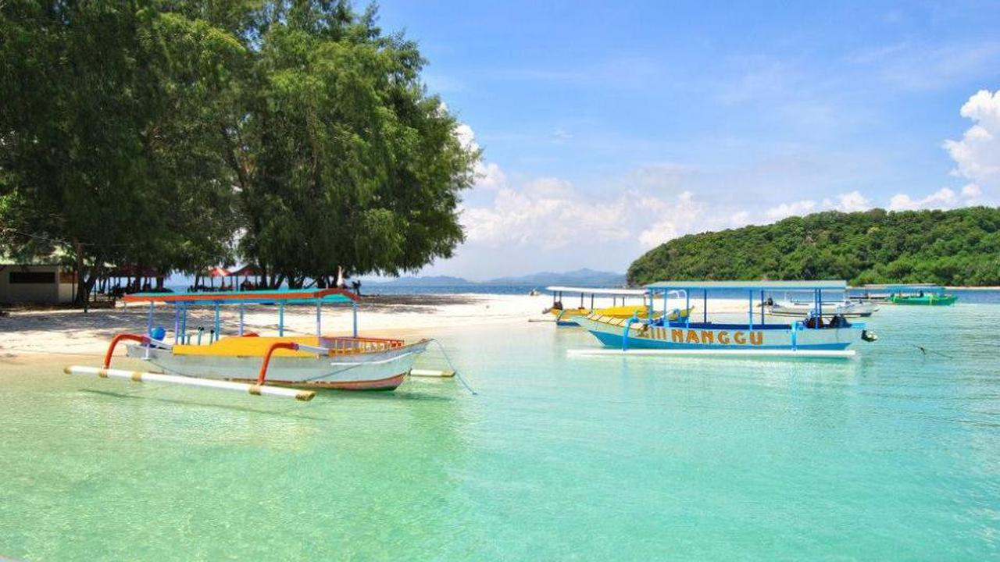

Diposting Oleh Merdeka.com, Arthur Gideon

Liputan6.com, Lombok - Pemerintah Provinsi Nusa Tenggara Barat terus berbenah untuk menggeliatkan kembali perekonomian pascabencana gempa bumi.
Salah satunya melalui sektor pariwisata yang menjadi salah satu andalan pemasukan daerah, untuk meningkatkan kembali jumlah kunjungan wisatawan lokal dan mancanegara ke destinasi-destinasi wisata di Pulau Lombok dan Sumbawa, Jumat (23/11/2018).
Upaya itu ditempuh dengan melakukan penjajakan kerja sama dengan sejumlah maskapai penerbangan nasional dan internasional.
Zul menuturkan, pariwisata NTB akan lebih terasa geliat pemulihannya pascagempa, kalau rute-rute Direct Flight baru ini bisa terealisasi. Begitu juga penambahan frekuensi penerbangan dari dan ke Bandara Internasional Lombok dari sejumlah kota di luar negeri maupun domestik.
"Kami sudah masifkan promosi untuk mengembalikan awareness wisatawan bahwa Lombok dan Sumbawa sudah aman untuk dikunjungi. Begitu juga persoalan teknis seperti ketersediaan slot penerbangan dan parking stand untuk melayani penambahan jadwal terbang pesawat, sudah kami pikirkan," papar Gubernur Zul.
Pada hari yang sama, Gubernur Zulkieflimanysah juga melakukan pertemuan dengan Direktur Utama Lion Air Rudy Lumingkewas beserta jajaran direksi Lion Air dan Wings Air, mendiskusikan potensi realisasi direct flight dari Guangzhou (China) – Lombok dan Lombok – Jeddah (Arab Saudi).
Sementara untuk rute domestik, Lion Air dan Wings Air siap untuk membuka rute langsung Lombok-Labuan Bajo (NTT) dan Bima – Labuan Bajo.
"Potensi wisatawan dari China sangat besar dan mereka siap berangkat. Mekanismenya sejauh ini dengan model penerbangan carter (carter flight) dari beberapa kota di China ke Lombok. Memang butuh ikhtiar lebih untuk merealisasikan penerbangan Lion Air rute China – Lombok. Kami masih merumuskan bentuk yang paling ideal namun realistis," ungkap Zul.
========================================2 dari 2 Halaman======================================
Buka Rute Penerbangan
Gubernur Zul mengatakan, direct flight rute Lombok – Jeddah, membuka peluang menggairahkan kembali perputaran ekonomi para pengusaha travel dan penyelenggara ibadah Haji dan Umrah di NTB.
"Penerbangan langsung dari Bandara Internasional Lombok ke Jeddah akan membuat bisnis travelling sekaligus ibadah Haji dan atau Umrah semakin menarik. Kalau kita ingin maju, geliat ekonomi membaik dan sejahtera, peningkatan mobilitas masyarakat adalah kuncinya," beber Zul.
Dia menambahkan, adanya moda transportasi yg cepat, aman dan nyaman akan membuka banyak peluang dan kemajuan bagi bangkitnya kembali pariwisata NTB. "Yang pada akhirnya akan meningkatkan roda perekonomian NTB pascabencana gempa bumi," ujar Zul.
Selain melakukan pertemuan dengan pihak maskapai, Gubernur Zul juga melakukan pertemuan dengan Menteri Pariwisata Arief Yahya sore harinya.
Kementerian Pariwisata menjadi mitra dari pemerintah pusat yang memberikan perhatian besar terhadap pariwisata NTB, mulai dari promosi destinasi utama NTB seperti tiga Gili (Trawangan, Meno dan Air), memfasilitasi terwujudnya rute-rute direct flight dari luar negeri ke Lombok hingga bantuan pada Sekolah Tinggi Pariwisata di Soromandi Bima, untuk meningkatkan mutu SDM pariwisata di Pulau Sumbawa.
Menurut CEO Air Asia Indonesia Dendy Kurniawan, Lombok berpotensi menjadi hub penerbangan Indonesia pada tahun 2019-2020, melengkapi empat hub lainnya yang sudah ada.
"Dalam pertemuan ini kita finalisasi bahwa rute Kuala Lumpur – Lombok ditambah frekuensi penerbangannya, sembari membuka rute baru Perth – Lombok. Rute Perth – Lombok sangat realistis karena pangsa pasar wisman asal Australia di NTB adalah tiga besar, terutama anak-anak muda peselancar. Lombok juga berpotensi besar melengkapi konektivitas kami yang menghubungkan antar hub utama seperti Jakarta, Surabaya, Medan, Bali, Bandung maupun Makassar," ujar Dendy.